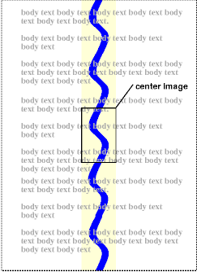

Содержание
Свойства CSS позволяют авторам специфицировать цвет переднего плана и фона элементов. В качестве фона используется цвет или изображение. Свойства фона позволяют авторам позиционировать фоновое изображение, размножать его и объявлять как фиксированное относительно порта просмотра или прокручивать вместе с документом.
Синтаксис значений цвета см. в разделе единицы измерения цвета.
| Значение: | <color> | inherit |
| Начальное: | зависит от пользовательского агента (ПА) |
| Применяется: | ко всем элементам |
| Наследуется: | да |
| Процентное: | N/A |
| Носитель: | визуальный |
Это свойство описывает цвет переднего плана содержимого текста элемента. Можно по разному специфицировать красный цвет:
EM { color: red } /* предопределённое название цвета */
EM { color: rgb(255,0,0) } /* диапазон RGB 0-255 */
Авторы могут специфицировать фон элемента (т.е. его видимую поверхность) как цвет или как изображение. В терминах модели бокса, "background" относится к фону содержимого и области заполнения. Цвет и стиль обрамления устанавливаются в свойствах обрамления. Поля всегда прозрачны, поэтому фон бокса-предка всегда просвечивает.
Свойства фона не наследуются, но фон бокса-предка будет по умолчанию просвечивать, поскольку начальное значение 'background-color' - 'transparent'.
Фон бокса, генерируемый корневым элементом, покрывает всю канву.
Для
документов HTML, однако, мы рекомендуем, чтобы
авторы специфицировали фон элемента BODY, а
не элемента HTML.
ПА должны учитывать следующие правила
приоритета при заполнении фона: если
значение свойства 'background' для элемента HTML
отлично от 'transparent', тогда используйте его, в
ином случае - используйте значение свойства
'background'
элемента BODY. Если результирующее значение
- 'transparent', то представление не определено.
В соответствии с этими правилами, канва следующего документа HTML будет иметь фон "marble":
<!DOCTYPE HTML PUBLIC "-//W3C//DTD HTML 4.0//EN">
<HTML>
<HEAD>
<TITLE>Установка фона канвы</TITLE>
<STYLE type="text/css">
BODY { background: url("http://style.com/marble.png") }
</STYLE>
</HEAD>
<BODY>
<P>Мой фон - marble.
</BODY>
</HTML>
| Значение: | <color> | transparent | inherit |
| Начальное: | transparent |
| Применяется: | ко всем элементам |
| Наследуется: | нет |
| Процентное: | N/A |
| Носитель: | визуальный |
Это свойство устанавливает цвет фона элемента значением <color> или ключевым словом 'transparent' (чтобы сделать фон подложки просвечивающим).
H1 { background-color: #F00 }
| Значение: | <uri> | none | inherit |
| Начальное: | none |
| Применяется: | ко всем элементам |
| Наследуется: | нет |
| Процентное: | N/A |
| Носитель: | визуальный |
Это свойство устанавливает изображение-фон элемента. При установке изображения для фона авторам необходимо также специфицировать цвет фона, который будет использоваться, если изображение окажется недоступным. Если изображение доступно, оно выводится поверх цвета фона. (Таким образом, цвет фона будет виден в прозрачных участках изображения).
Значениями данного свойства являются <uri>, для спецификации изображения, или 'none', если изображение не используется.
BODY { background-image: url("marble.gif") }
P { background-image: none }
| Значение: | repeat | repeat-x | repeat-y | no-repeat | inherit |
| Начальное: | repeat |
| Применяется: | ко всем элементам |
| Наследуется: | нет |
| Процентное: | N/A |
| Носитель: | визуальный |
Если специфицировано изображение фона, то
данное свойство определяет, повторяется ли
данное изображение (размножается ли), и как.
Размноженное изображение покрывает
области содержимого и заполнения бокса.
Значения имеют следующий смысл:
BODY {
background: white url("pendant.gif");
background-repeat: repeat-y;
background-position: center;
}
 [D]
Единственная копия фонового изображения центрирована, а другие копии помещены выше и ниже, чтобы создать вертикальную ленту позади элемента.
| Значение: | scroll | fixed | inherit |
| Начальное: | scroll |
| Применяется: | ко всем элементам |
| Наследуется: | нет |
| Процентное: | N/A |
| Носитель: | визуальный |
Если специфицировано изображение фона, то данное свойство определяет, является ли оно фиксированным относительно порта просмотра ('fixed'), или прокручивается вместе с документом ('scroll').
Даже если изображение зафиксировано, оно будет видно только в том случае, если находится в области фона или заполнения элемента. Таким образом, пока изображение не размножено ('background-repeat: repeat'), оно может быть невидимым.
Здесь создаётся бесконечная вертикальная полоса, остающаяся "приклеенной" к порту просмотра при прокручивании элемента.
BODY {
background: red url("pendant.gif");
background-repeat: repeat-y;
background-attachment: fixed;
}
ПА могут рассматривать 'fixed' как 'scroll'. Однако рекомендуется, чтобы они интерпретировали 'fixed' корректно, хотя бы для элементов HTML и BODY, поскольку у автора нет способа предоставлять изображение только для тех браузеров, которые поддерживают 'fixed'. См. детали в разделе соответствие.
| Значение: | [ [<percentage> | <length> ]{1,2} | [ [top | center | bottom] || [left | center | right] ] ] | inherit |
| Начальное: | 0% 0% |
| Применяется: | к элементам уровня блока и к замещаемым элементам |
| Наследуется: | нет |
| Процентное: | относится к размеру самого бокса |
| Носитель: | визуальный |
Если фоновое изображение специфицировано,
то данное свойство определяет его (изображения)
начальную позицию.
Значения имеют следующий смысл:
Если задано только одно значение, в
процентах или единицах измерения, то оно
устанавливает только горизонтальную
позицию, вертикальная позиция будет 50%.
Если заданы два значения, первое задаёт
горизонтальную позицию.
Допускаются комбинации значений в
процентах и единицах измерения (например, '50% 2cm').
Допускаются негативные значения позиции.
Ключевые слова не могут комбинироваться со
значениями в процентах или единицах
измерения (все возможные сочетания
приведены выше).
BODY { background: url("banner.jpeg") right top } /* 100% 0% */
BODY { background: url("banner.jpeg") top center } /* 50% 0% */
BODY { background: url("banner.jpeg") center } /* 50% 50% */
BODY { background: url("banner.jpeg") bottom } /* 50% 100% */
Если фоновое изображение фиксировано в порте просмотра (см. свойство ), то изображение размещается относительно порта просмотра, а не относительно области заполнения элемента. Например,
BODY {
background-image: url("logo.png");
background-attachment: fixed;
background-position: 100% 100%;
background-repeat: no-repeat;
}
В данном примере изображение (одиночное) размещается в правом верхнем углу порта просмотра.
| Значение: | [<'background-color'> || <'background-image'> || <'background-repeat'> || || <'background-position'>] | inherit |
| Начальное: | не определено для сокращённых свойств |
| Применяется: | ко всем элементам |
| Наследуется: | нет |
| Процентное: | разрешено для 'background-position' |
| Носитель: | визуальный |
Свойство 'background' это сокращённое свойство для установки индивидуальных свойств фона (т.е. 'background-color', 'background-image', 'background-repeat', и 'background-position') в одном месте в таблице стилей.
Свойство 'background' сначала устанавливает все индивидуальные свойства фона в их начальные значения, а затем назначает явные значения, заданные в объявлении.
В первом правиле задано только значение 'background-color', а другие
индивидуальные свойства установлены в свои
начальные значения.
Во втором правиле все индивидуальные
свойства специфицированы.
BODY { background: red }
P { background: url("chess.png") gray 50% repeat fixed }
По вопросам цветовой гаммы проконсультируйтесь в Gamma Tutorial в спецификации PNG ([PNG10]).
При вычислении коррекции цветовой гаммы, ПА, выводящие на CRT, могут принять идеальный CRT и игнорировать любые эффекты внедряемой гаммы. Это означает, что минимальная обработка, необходимая для текущей платформы - :
"Применение гаммы" означает, что каждый из трёх - R, G и B - обязан быть конвертирован в R'=Rgamma, G'=Ggamma, B'=Bgamma, прежде чем быть обработанным ОС.
Это можно быстро выполнить путём однократного создания 256-элементной просмотровой таблицы при вызове браузера таким вот образом:
for i := 0 to 255 do raw := i / 255.0; corr := pow (raw, gamma); table[i] := trunc (0.5 + corr * 255.0) end
что затем позволяет исключить необходимость чрезмерных вычислений для атрибута цвета, и ещё меньше - через пикселные значения.